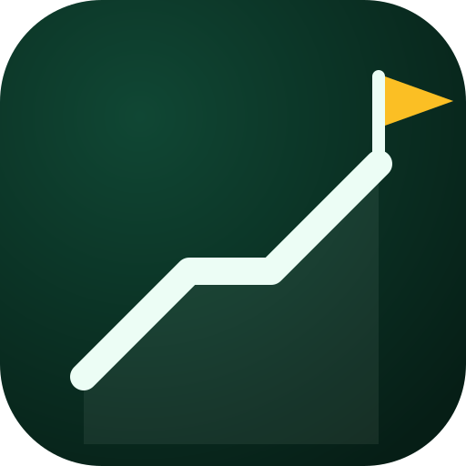

「上岸助手」最终图标 · 方案D「登顶曲线」验收图
公开交付文件：public/icons/icon.svg + icon-maskable.svg + icon-192/512.png + icon-maskable-512.png + apple-touch-icon.png + public/favicon.ico
1. 主图标（512px）—— SVG 源 / PNG 渲染 / maskable 自适应版

icon.svg（源）
icon-512.png（PWA/桌面）
icon-maskable-512.png（全出血）
apple-touch-icon.png 180px
2. 小尺寸阶梯（favicon / 任务栏清晰度）
192px → 96 显示
favicon 48
favicon 32
favicon 16
3. 使用场景模拟
上岸助手
上岸助手 (SVG)
上岸助手 — 考研学习督促工具
✕